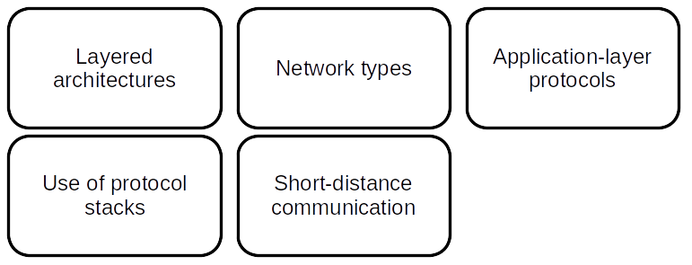
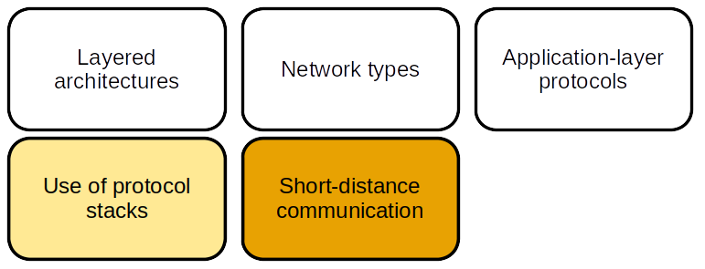

Introduction
Example of an embedded system
1960s - The Apollo Guidance Computer (AGC)

Source: klabs.org
Functions
- Navigation from the Earth to lunar orbit
- Landing on the Moon
- Return to lunar orbit
- Rendezvous
- User interface
- Redundancy and safety
- Etc.
Characteristics
- Weight: aroung 32 kg (without the user interface)
- Power supply: 28 V CC - 70 W
- Permanent memory: 36 Kwords (16 bits) ⇔ 72 KB
- Erasable memory: 2 Kwords (16 bit) ⇔ 4 KB
- Clock: 1 MHz (83 kHz instruction cycle time)
Software

- One of the first real-time, interrupt-driven operating systems
- Task priorization
- Fault tolerance
- Written in assembly language
Source:
Wikipedia - Margaret Hamilton
Compared to current configurations:
- Very little memory (total of 76 KB)
- Very little processing power (83,000 instructions per second)
Yet it allowed to bring human beings to the Moon.
It's not because you don't have a lot of memory and processing power that you can't develop great applications!
The board we will use in the practice sessions
- Memory: total of 1792 KB (23 times the AGC)
- Processing power: 117 millions of instructions per second (1410 times the AGC)
So, please, never complain that you don't have enough memory and processing power for running an embedded application, unless you're trying to perform something more complicated than landing on the Moon!
What is an embedded system?
An embedded system is a specialized computer system able to perform dedicated functions within a larger system.
Key characteristics
- Purpose-built - as opposed to general purpose computers
- Integration within a larger system - handling sensors and actuators
- Real-time operation - strict time constraints
- Resource constraints - memory, processing power, energy, size, etc.
- Reliability - continuous operation without human intervention
Machine learning and embedded systems
- In the embedded world, some classes of problems can't be easily solved with traditional methods: voice recognition, object detection, facial recognition, etc.
- Nowadays, some embedded systems are powerful enough to run (and even train) some ML models
- But running ML models in embedded systems is still somewhat challenging, and requires to understand what embedded systems are and how they work
Needs of embedded ML applications
To perform their job, ML applications need:


Technical domains

Closer look - Software Development


HAL: Hardware Abstraction Layer - RTOS: Real-Time Operating System
Closer look - Communication


Closer look - Electronics